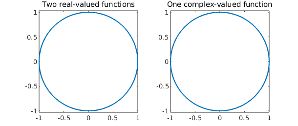
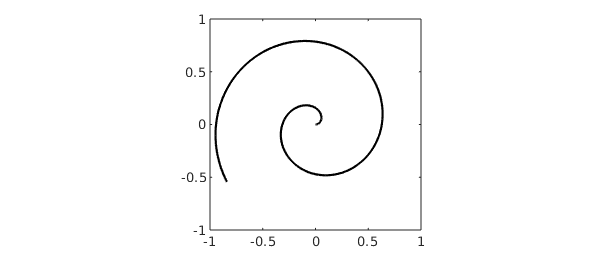

13.1 sum and sum2
We have already seen the sum2 command, which returns the definite double integral of a chebfun2 over its domain of definition. The sum command is a little different, integrating with respect to one variable at a time following the MATLAB analogy. For instance, the following commands integrate $\sin(10xy)$ with respect to $y$:
f = chebfun2(@(x,y) sin(10*x.*y),[0 pi/4 0 3]); sum(f)
ans =
chebfun row (1 smooth piece)
interval length endpoint values
[ 0, 0.79] 35 -2.2e-15 0.13
Epslevel = 3.552714e-15. Vscale = 2.173762e+00.
A chebfun is returned because the result depends on $x$ and hence is a function of one variable. Similarly, we can integrate over the $x$ variable and plot the result.
LW = 'linewidth'; sum(f,2), plot(sum(f,2),LW,1.6)
ans =
chebfun column (1 smooth piece)
interval length endpoint values
[ 0, 3] 35 -5.6e-16 0.033
Epslevel = 3.552714e-15. Vscale = 5.690896e-01.

A closer look reveals that sum(f) returns a row chebfun while sum(f,2) returns a column chebfun. This distinction is a reminder that sum(f) is a function of $x$ while sum(f,2) is a function of $y$. If we integrate over $y$ and then $x$, the result is the double integral of $f$.
sum2(f) sum(sum(f))
ans = 0.377914013520379 ans = 0.377914013520379
It is interesting to compare the execution times involved for computing the double integral by different commands. Chebfun2 does very well for smooth functions. Here we see an example in which it is faster than the MATLAB quad2d command.
F = @(x,y) exp(-(x.^2 + y.^2 + cos(4*x.*y)));
tol = 3e-14;
tic, I = quad2d(F,-1,1,-1,1,'AbsTol',tol); t = toc;
fprintf('QUAD2D: I = %17.15f time = %6.4f secs\n',I,t)
tic, I = sum(sum(chebfun2(F))); t = toc;
fprintf('CHEBFUN2/SUMSUM: I = %17.15f time = %6.4f secs\n',I,t)
tic, I = sum2(chebfun2(F)); t = toc;
fprintf('CHEBFUN2/SUM2: I = %17.15f time = %6.4f secs\n',I,t)
QUAD2D: I = 1.399888131932670 time = 0.2660 secs CHEBFUN2/SUMSUM: I = 1.399888131932670 time = 0.0837 secs CHEBFUN2/SUM2: I = 1.399888131932670 time = 0.0351 secs
Chebfun2 is not designed specifically for numerical quadrature (or more properly, "cubature"), and careful comparisons with existing software have not been carried out. Low rank function approximations have been previously used for numerical quadrature by Carvajal, Chapman, and Geddes [Carvajal, Chapman & Geddes 2005]. A cubature package CHEBINT based on Chebyshev approximations has been produced by Poppe and Cools [Poppe & Cools 2011].
13.2 norm, mean, and mean2
The $L^2$-norm of a function $f(x,y)$ can be computed as the square root of the double integral of $f^2$. In Chebfun2 the command norm(f), without any additional arguments, computes this quantity. For example,
f = chebfun2('exp(-(x.^2 + y.^2 +4*x.*y))');
norm(f), sqrt(sum2(f.^2))
ans = 2.819481057146932 ans = 2.819481057146935
Here is another example. This time we compute the norms of $f(x,y)$, $\cos(f(x,y))$, and $f(x,y)^5$.
f = chebfun2(@(x,y) exp(-1./( sin(x.*y) + x ).^2)); norm(f), norm( cos(f) ), norm( f.^5 )
ans = 0.462652919760561 ans = 1.950850368197070 ans = 0.060896016071932
The command mean2 scales the result of sum2 to return the mean value of $f$ over the rectangle of definition:
help chebfun2/mean2
MEAN2 Mean of a CHEBFUN2
V = MEAN2(F) returns the mean of a CHEBFUN:
d b
/ /
V = 1/(d-c)/(b-a) | | f(x,y) dx dy
/ /
c a
where the domain of F is [a,b] x [c,d].
See also MEAN, STD2.
For example, here is the average value of a 2D Runge function.
runge = chebfun2( @(x,y) 1./( .01 + x.^2 + y.^2 )) ; plot(runge) mean2(runge)
ans = 3.796119578934829

The command mean computes the average along one variable. The output is a function of one variable represented by a chebfun, so we can plot it.
plot(mean(runge),LW,1.6)
title('Mean value of 2D Runge function wrt y')

If we average over $y$ and then $x$, we obtain the mean value over the whole domain, matching the earlier result.
mean(mean(runge))
ans = 3.796119578934826
13.3 cumsum and cumsum2
The command cumsum2 computes the double indefinite integral, which is a function of two variables, and returns a chebfun2.
help chebfun2/cumsum2
CUMSUM2 Double indefinite integral of a CHEBFUN2.
F = CUMSUM2(F) returns the double indefinite integral of a CHEBFUN2. That is
y x
/ /
CUMSUM2(F) = | | f(x,y) dx dy for (x,y) in [a,b] x [c,d],
/ /
c a
where [a,b] x [c,d] is the domain of f.
See also CUMSUM, SUM, SUM2.
On the other hand, cumsum(f) computes the indefinite integral with respect to just one variable, also returning a chebfun2. The indefinite integral with respect to $y$ and then $x$ is the same as the double indefinite integral, as we can check numerically.
f = chebfun2(@(x,y) sin(3*((x+1).^2+(y+1).^2)));
contour(cumsum2(f),'numpts',400), axis equal
title('Contours of cumsum2(f)'), axis([-1 1 -1 1])
norm( cumsum(cumsum(f),2) - cumsum2(f) )
ans =
0

13.4 Complex encoding
As is well known, a pair of real scalar functions $f$ and $g$ can be encoded as a complex function $f+ig$. This trick can be useful for simplifying many operations, though at the same time it may be confusing. For instance, instead of representing the unit circle by two real-valued functions, we can represent it by one complex-valued function:
d = [0 2*pi]; c1 = chebfun(@(t) cos(t),d); % first real-valued function c2 = chebfun(@(t) sin(t),d); % second real-valued function c = chebfun(@(t) cos(t)+1i*sin(t),d); % one complex function
Here are two ways to make a plot of a circle.
subplot(1,2,1), plot(c1,c2,LW,1.6)
axis equal, title('Two real-valued functions')
subplot(1,2,2), plot(c,LW,1.6)
axis equal, title('One complex-valued function')

This complex encoding trick is exploited in a number of places in Chebfun2. Specifically, it's used to encode the path of integration for a line integral (see next section), to represent zero contours of a chebfun2 (Chapter 14), and to represent trajectories in vector fields (Chapter 15).
We hope users become comfortable with complex encodings, though they are not required for the majority of Chebfun2 functionality.
13.5 Integration along curves
Chebfun2 can compute the integral of $f(x,y)$ along a curve $(x(t),y(t))$. It uses the complex encoding trick and encode the curve $(x(t),y(t))$ as a complex valued chebfun $x(t) + iy(t)$.
For example, here is the curve in the unit square defined by $\exp(10 it)$, $t\in[0,1]$.
clf C = chebfun(@(t) t.*exp(10i*t),[0 1]); plot(C,'k',LW,2), axis([-1 1 -1 1]), axis square

Here is a plot of the function $f(x,y) = \cos(10xy^2) + \exp(-x^2)$ on the square, with the values of $f(x,y)$ on the curve $C$ shown in black:
f = chebfun2(@(x,y) cos(10*x.*y.^2) + exp(-x.^2)); plot(f), hold on plot3(real(C),imag(C),f(C),'k',LW,2)

The object $|f(C)|$ is just a real-valued function defined on $[0,1]$, whose integral we can readily compute:
sum(f(C))
ans = 1.613596461872283
This number can be interpreted as the integral of $f(x,y)$ along the curve $C$.
13.6 diff, diffx, diffy
In MATLAB the diff command calculates finite differences of a matrix along its columns (by default) or rows. For a chebfun2 the same syntax represents partial differentiation $\partial f/\partial y$ (by default) or $\partial f/\partial x$.
As pointed out in the last chapter, however, this can be rather confusing. Accordingly Chebfun2 offers the alternatives diffx and diffy with more obvious meaning. Here for example is the syntax of diffx:
help chebfun2/diffx
DIFFX Differentiate a CHEBFUN2 with respect to its first argument.
G = DIFFX(F) returns a CHEBFUN2 representing the derivative of F in its
first argument. This is the same as DIFF(F,1,2).
G = DIFFX(F,N) returns a CHEBFUN2 representing the Nth derivative of F in
its first argument. This is the same as DIFF(F,N,2).
This command is for convenience as the syntax for DIFF, inherited from the
DIFF command for matrices, can be confusing.
See also DIFFY, DIFF.
Here we use diffx and diffy to check that the Cauchy-Riemann equations hold for an analytic function.
f = chebfun2(@(x,y) sin(x+1i*y)); % a holomorphic function u = real(f); v = imag(f); % real and imaginary parts norm(diffy(v) - diffx(u)) norm(diffx(v) + diffy(u)) % Do the Cauchy-Riemann eqns hold?
ans =
2.577622443765214e-14
ans =
1.064740840017172e-14
13.7 Integration in three variables
Chebfun2 also works pretty well for integration in three variables. The idea is to integrate over two of the variables using Chebfun2 and the remaining variable using Chebfun. We have selected a tolerance of $10^{-6}$ for this example because the default tolerance in the MATLAB integral3 command is also $10^{-6}$.
r = @(x,y,z) sqrt(x.^2 + y.^2 + z.^2);
t = @(x,y,z) acos(z./r(x,y,z)); p = @(x,y,z) atan(y./x);
f = @(x,y,z) sin(5*(t(x,y,z) - r(x,y,z))) .* sin(p(x,y,z)).^2;
I = @(z) sum2(chebfun2(@(x,y) f(x,y,z),[-2 2 .5 2.5]));
tic, I = sum(chebfun(@(z) I(z),[1 2],'vectorize')); t = toc;
fprintf(' Chebfun2: I = %16.14f time = %5.3f secs\n',I,t)
tic, I = integral3(f,-2,2,.5,2.5,1,2); t = toc;
fprintf(' MATLAB integral3: I = %16.14f time = %5.3f secs\n',I,t)
Chebfun2: I = -0.48056569408898 time = 2.685 secs MATLAB integral3: I = -0.48056569417568 time = 1.289 secs
13.8 References
[Carvajal, Chapman & Geddes 2005] O. A. Carvajal, F. W. Chapman and K. O. Geddes, "Hybrid symbolic-numeric integration in multiple dimensions via tensor-product series", Proceedings of ISSAC'05, M. Kauers, ed., ACM Press, 2005, pp. 84--91.
[Poppe & Cools 2011] K. Poppe and R. Cools, "CHEBINT: operations on multivariate Chebyshev approximations", http://nines.cs.kuleuven.be/software/CHEBINT/.